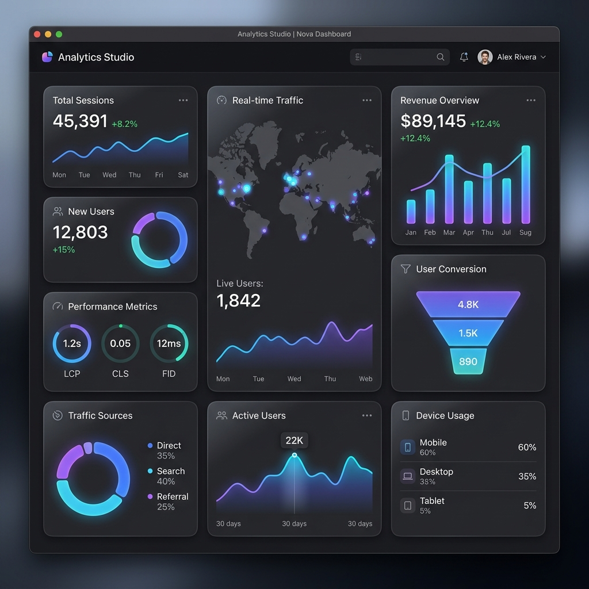

Intelligence,
secured by design.
Hi, I'm Moh. Siraj Khan Mansoori. I specialize in building resilient Machine Learning systems, securing Generative AI models, and shielding network architectures.
Securing the next paradigm.
As artificial intelligence integrates into critical infrastructure, securing the machine learning lifecycle is paramount. My work lies at the intersection of Machine Learning and Information Security, focusing on safeguarding intelligent systems from exploitation. I specialize in testing model robustness against adversarial attacks (like evasion and poisoning), hardening LLM systems against prompt injections, and designing secure, privacy-preserving MLOps pipelines. Combining rigorous academic research at NITK Surathkal with practical development, my goal is to build intelligent systems that are resilient, compliant, and secure by design.
Education
Advanced Capabilities.
A security-first approach to building and deploying machine learning applications.
Generative AI & LLMs
Architecting and aligning large generative models with safety guidelines and context-aware capabilities.
Cybersecurity
Hardening systems against attacks and conducting digital forensics.
AI & Deep Learning
Training neural networks and processing natural language data.
Engineering & Tools
Full stack tools to prototype, build, and deploy production-ready intelligence pipelines.
Selected Creations.
A display of active engineering projects bridging Artificial Intelligence and security engineering.
AI-Based Intrusion Detection System
Built a high-performance machine learning-based system to detect malicious network traffic. Trained Random Forest and Neural Network classifiers on CICIDS and NSL-KDD benchmark datasets, achieving top-tier classification accuracy with very low false positive rates.
RAG-Based LLM Chatbot
Developed an advanced conversational AI utility using Retrieval-Augmented Generation (RAG). Integrated LangChain with a FAISS vector store for fast, secure document retrieval and persistent memory for multi-turn dialogues.
AI Resume Screening System
Designed an automated NLP pipeline that ingests resume profiles, encodes them using sentence transformer embeddings, and calculates cosine similarity scores to screen and rank profiles against targeted job descriptions.
Diffusion Image Generation
Deployed pre-trained Stable Diffusion models from HuggingFace to implement a high-fidelity text-to-image pipeline, optimizing inference speed and weights precision for consumer hardware architectures.

Job Tracker Dashboard
Engineered a responsive full-stack platform using React.js and Firebase. Allows tracking of job applications with status boards, visual analytics, data backups, and quick search filters.
AI Security Interactive Lab.
Test the robustness of a neural network model against adversarial attacks. Trigger defenses to harden the network.
Let's connect.
Seeking research collaboration, AI Security audits, or employment opportunities. Let's build secure intelligent systems.
Full Professional Profile
Download my comprehensive resume outlining academic accomplishments, security research, and full technical proficiency details.
Download Resume PDF